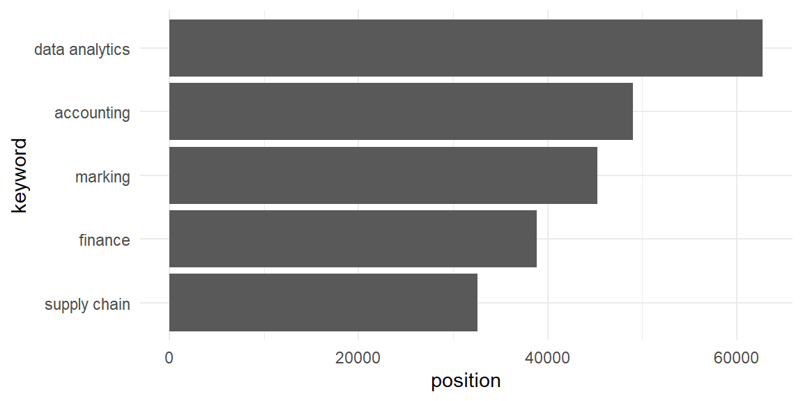

Notes for SCMA450: Data Modeling and Computing
2021-08-25
Chapter 1 Overview of Business Analytics and R Programming
Ever wondered how much data is created every day? Or perhaps you’re keen to know how much data the average person uses at home? Thanks to the invention of mobile technology like smartphones and tablets, along with innovations in mobile networks and WiFi, the creation and consumption of data are constantly growing. In fact, there are 2.5 quintillion bytes of data created each day at our current pace, but that pace is only accelerating with the growth of the Internet of Things (IoT). To put things in perspective, Google on average processes more than 40,000 searches EVERY second (3.5 billion searches per day); Snapchat users share 527,760 photos every minute of the day; Users watch 4,146,600 YouTube videos every minute of the day; We send 16 million text messages and 103,447,520 spam emails every minute. Once you are aware of all the data you create as a single individual, you can start to imagine just how much data we collectively generate every single day.
With such a tremendous amount data generated, the business world demands people equipped with the tools to analyze big data. In particular, data Analytics is a scientific process of combining data and models into insights for the purpose of making better decisions. For example, Netflix sets up an open competition to improve its algorithm to predict user’s rating of a movie, with a prize of 1million dollars. Similarly, Zillow (a real estate market place company) hosts a open competition with prize of 1million dollars to improve its prediction for house price.
The scope of business analytics includes
- Descriptive Analytics: Condense tabular data into charts/reports/dashboard to be understandable.
- Predictive Analytics: use historical data to predict future.
- Prescriptive Analytics: Prescribe an action a business should take.
The job market is also great for students with business analytical skills. Based on the search on keyword “data analytics” on Indeed.com in May 2020, the data analytics field has greatest amount of position in US.

So, what are the skills needed to be competitive in the business analytical position? We have survey the data scientists and marketing analytics at Ameritas (a large insurance company). This is their response:
“If a course is focusing on data visualization, then I would highly recommend Tableau. If they are looking at data cleansing, then teaching either R or Python to their students, even on an introductory level, will give them a considerable boost when looking for positions. An in-depth understanding of Microsoft Excel should be understood, but it is much harder to recreate accessible and powerful commands in R or Python.”
In this course, we will focus on business analytical application with R. We will also talk a little about Python to give you a taste of the two different programming languages. Once you finished the course, we will fall in love with R because it is such a powerful tool for analyzing big data.
R is a free software environment for statistical computing and graphics. R has the richest packages to perform data analysis. Around 12,000 packages available in CRAN (Comprehensive R Archive Network, open-source repository of R packages). R is open source: you can use the 12,000 packages for free! It compiles and runs on a wide variety of UNIX platforms, Windows and MacOS. To download R, please choose your preferred CRAN mirror at: https://www.r-project.org/.
RStudio is an Integrated Development Environment (IDE) for R, a programming language for statistical computing and graphics. You can write and run R code with Rstudio. Here is the website to download Rstudio: https://www.rstudio.com/products/rstudio/download/.
The objective of this course is:
- Get excited about writing code! This is one of my most important goal since we have the stereotype that business major only know to write ppt, not code. This is not true. Everyone should learn to code in the 21th century.
- Learn the R syntax. Just like a language, R is a computer language and we need to know the basic grammar R language to be able to give instruction to computers.
- Write R Code for Data Analytics Independently. It is common that students follow along well in class, but cannot write code independently. So we will have many exercise to help you code independently.